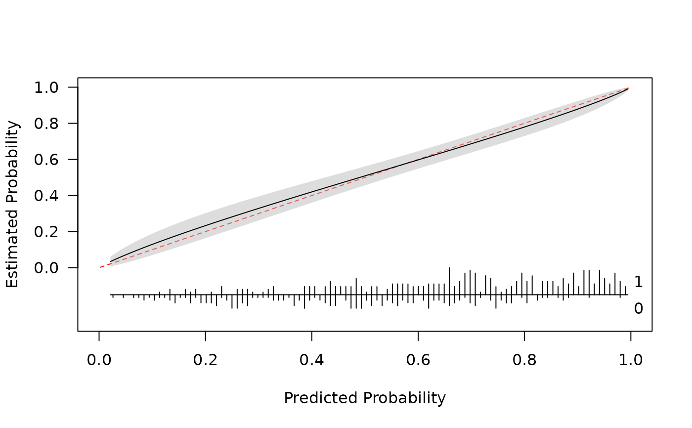
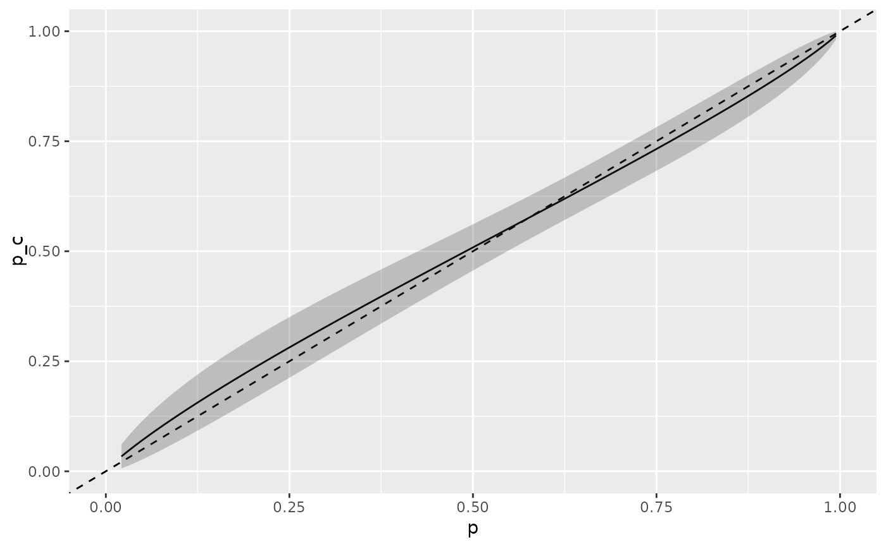

Extract plot data from pmcalibration object
Value
data frame for plotting with 4 columns
p- values for the x-axis (predicted probabilities - note these are *not* from your data and are only used for plotting)p_c- probability implied by the calibration curve givenplowerandupper- bounds of the confidence interval
Examples
library(pmcalibration)
# simulate some data with a binary outcome
n <- 500
dat <- sim_dat(N = n, a1 = .5, a3 = .2)
head(dat)
#> x1 x2 y LP
#> 1 -0.8168944 -0.4201007 1 -0.6683596
#> 2 0.3836505 1.0472054 1 2.0112081
#> 3 -0.4586323 -1.5465763 0 -1.3633466
#> 4 -0.7157040 -1.0460057 1 -1.1119836
#> 5 0.4295485 -2.2726698 0 -1.5383656
#> 6 -1.1698527 -0.3166519 1 -0.9124175
# predictions
p <- with(dat, invlogit(.5 + x1 + x2 + x1*x2*.1))
# fit calibration curve
cal <- pmcalibration(y = dat$y, p = p, smooth = "gam", k = 20, ci = "pw")

cplot <- get_curve(cal, conf_level = .95)
head(cplot)
#> p p_c lower upper
#> 1 0.02123300 0.03373625 0.006595718 0.06087678
#> 2 0.03106377 0.04700997 0.013016223 0.08100371
#> 3 0.04089454 0.05969715 0.020108363 0.09928593
#> 4 0.05072532 0.07194617 0.027667787 0.11622456
#> 5 0.06055609 0.08384568 0.035577422 0.13211394
#> 6 0.07038687 0.09545483 0.043761841 0.14714781
if (requireNamespace("ggplot2", quietly = TRUE)){
library(ggplot2)
ggplot(cplot, aes(x = p, y = p_c, ymin=lower, ymax=upper)) +
geom_abline(intercept = 0, slope = 1, lty=2) +
geom_line() +
geom_ribbon(alpha = 1/4) +
lims(x=c(0,1), y=c(0,1))
}
